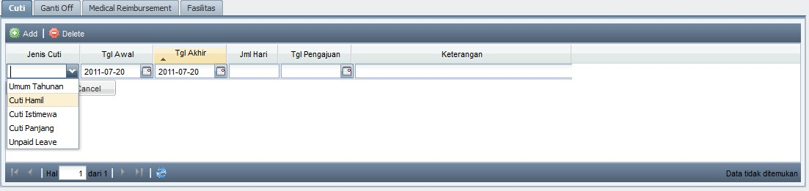
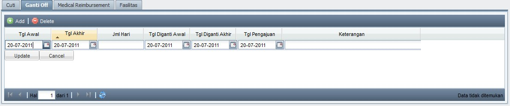

PB Baru
Langkah-langkah untuk membuat PB baru:
- Klik Add untuk menampilkan form isian PB baru yang akan diisi

- Akan muncul form untuk pengisian PB baru yang wajib diisi. Cara pengisiannya adalah sebagai berikut :
- No PB tidak perlu diinputkan, karena akan otomatis terinput
- Pilih OP yang diinginkan
- OP yang tampil hanya OP yang statusnya Tertutup, masih memiliki Sisa, dan masih dalam batas 60 + 3 hari sejak OP dibuat

- Setelah memilih No OP, maka sistem akan otomatis mengeluarkan detail barang dari OP tersebut. Kolom Jumlah otomatis akan terisi Sisa barang yang belum dibuatkan PB. User masih dapat mengubah Jumlah dengan cara 2x klik di kolom Jumlah, lalu inputkan jumlah yang sesuai (jumlah ini harus sesuai dengan kondisi barang datang sesungguhnya).

- Supplier akan otomatis diinputkan berdasarkan No OP yang dipilih
- Inputkan No Surat Jalan dan Nama Pengirim, serta Keterangan jika diperlukan
- Pilih Gudang yang sesuai (secara default adalah Gudang Besar)
Note: Pemilihan Gudang wajib diperhatikan, mengingat hal ini akan menambah stok barang di Gudang yang dituju.
- Inputkan Tanggal (default adalah tanggal hari ini)
- Cek sekali lagi seluruh data yang sudah diinput, dan pastikan barang yang datang sesuai dengan jumlah yang diinputkan.
- Klik Save and Print untuk menyimpan dan mencetak PB tersebut
Note: selalu simpan bukti cetak faktur PB yang telah dicetak
Hal-hal yang perlu diperhatikan dalam membuat PB:
- Jumlah pada masing-masing produk pada PB maksimal adalah sebanyak jumlah produk yang diinputkan sebelumnya di OP. Jika ternyata jumlah barang yang datang (PB) lebih banyak dari jumlah yang telah diorderkan (OP), maka harus dibuatkan OP baru lagi untuk menginputkan jumlah kelebihan barang tersebut, serta membuat PB baru lagi untuk memanggil OP baru tsb.
- Cek ulang satuan produk yang datang dengan satuan yang telah diinputkan di PB.
Copyright © 2010, IT Department of Miracle Aesthetic Clinic Group
Created with the Freeware Edition of HelpNDoc: Full featured Documentation generator